MAXimal
добавлено: 23 Aug 2008 21:00
редактировано: 5 Apr 2012 23:14
Содержание [скрыть]
Нахождение всех подпалиндромов
Постановка задачи
Дана строка  длины
длины  . Требуется найти все такие пары
. Требуется найти все такие пары  , где
, где  , что подстрока
, что подстрока ![s[i \ldots j]](../tex2png/cache/1da9aede35685d45e082c44a363fe070.png) является палиндромом (т.е. читается одинаково слева направо и справа налево).
является палиндромом (т.е. читается одинаково слева направо и справа налево).
Уточнение постановки
Понятно, что в худшем случае таких подстрок-палиндромов может быть  , и на первый взгляд кажется, что алгоритма с линейной асимптотикой существовать не может.
, и на первый взгляд кажется, что алгоритма с линейной асимптотикой существовать не может.
Однако информацию о найденных палиндромах можно возвращать более компактно: для каждой позиции  найдём значения 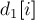 и 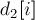, обозначающие количество палиндромов соответственно нечётной и чётной длины с центром в позиции
найдём значения 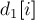 и 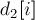, обозначающие количество палиндромов соответственно нечётной и чётной длины с центром в позиции  .
.
Например, в строке 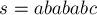 есть три палиндрома нечётной длины с центром в символе 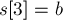, т.е. значение 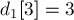:
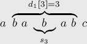
А в строке 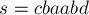 есть два палиндрома чётной длины с центром в символе 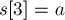, т.е. значение 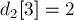:
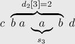
Т.е. идея — в том, что если есть подпалиндром длины  с центром в какой-то позиции , то есть также подпалиндромы длины 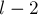, 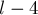, и т.д. с центрами в . Поэтому двух таких массивов и достаточно для хранения информации обо всех подпалиндромах этой строки.
с центром в какой-то позиции , то есть также подпалиндромы длины 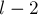, 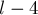, и т.д. с центрами в . Поэтому двух таких массивов и достаточно для хранения информации обо всех подпалиндромах этой строки.
Достаточно неожиданным фактом является то, что существует довольно простой алгоритм, который вычисляет эти "массивы палиндромностей" 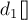 и 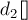 за линейное время. Этот алгоритм и описывается в данной статье.
Решение
Вообще говоря, данная задача имеет несколько известных решений: с помощью техники хэширования её можно решить за  , а с помощью суффиксных деревьев и быстрого алгоритма LCA эту задачу можно решить за
, а с помощью суффиксных деревьев и быстрого алгоритма LCA эту задачу можно решить за  .
.
Однако описываемый в данной статье метод значительно проще, и обладает меньшими скрытыми константами в асимптотике времени и памяти. Этот алгоритм был открыт Гленном Манакером (Glenn Manacher) в 1975 г.
Тривиальный алгоритм
Во избежание неоднозначностей при дальнейшем описании условимся, что же такое есть "тривиальный алгоритм".
Это алгоритм, который для поиска ответа в позиции раз за разом пробует увеличить ответ на единицу, каждый раз сравнивая пару соответствующих символов.
Такой алгоритм слишком медленен, весь ответ он может посчитать лишь за время  .
.
Приведём для наглядности его реализацию:
vector<int> d1 (n), d2 (n); for (int i=0; i<n; ++i) { d1[i] = 1; while (i-d1[i] >= 0 && i+d1[i] < n && s[i-d1[i]] == s[i+d1[i]]) ++d1[i]; d2[i] = 0; while (i-d2[i]-1 >= 0 && i+d2[i] < n && s[i-d2[i]-1] == s[i+d2[i]]) ++d2[i]; }
Алгоритм Манакера
Научимся сначала находить все подпалиндромы нечётной длины, т.е. вычислять массив ; решение для палиндромов чётной длины (т.е. нахождение массива ) получится небольшой модификацией этого.
Для быстрого вычисления будем поддерживать границы  самого правого из обнаруженных подпалиндрома (т.е. подпалиндрома с наибольшим значением
самого правого из обнаруженных подпалиндрома (т.е. подпалиндрома с наибольшим значением  ). Изначально можно положить 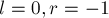.
). Изначально можно положить 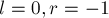.
Итак, пусть мы хотим вычислить значение для очередного , при этом все предыдущие значения уже подсчитаны.
- Если не находится в пределах текущего подпалиндрома, т.е.
 , то просто выполним тривиальный алгоритм.
, то просто выполним тривиальный алгоритм.Т.е. будем последовательно увеличивать значение , и проверять каждый раз — правда ли текущая подстрока 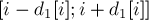 является палиндромом. Когда мы найдём первое расхождение, либо когда мы дойдём до границ строки
— останавливаемся: мы окончательно посчитали значение . После этого мы должны не забыть обновить значения . - Рассмотрим теперь случай, когда
 .
.Попробуем извлечь часть информации из уже подсчитанных значений . А именно, отразим позицию
внутри подпалиндрома , т.е. получим позицию 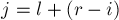, и рассмотрим значение 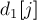. Поскольку  — позиция, симметричная позиции , то почти всегда мы можем просто присвоить 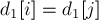. Иллюстрация этого отражения (палиндром вокруг фактически "копируется" в палиндром вокруг ):
— позиция, симметричная позиции , то почти всегда мы можем просто присвоить 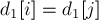. Иллюстрация этого отражения (палиндром вокруг фактически "копируется" в палиндром вокруг ):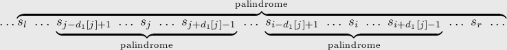
Однако здесь есть тонкость, которую надо обработать правильно: когда "внутренний палиндром" достигает границы внешнего или вылазит за неё, т.е. 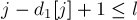 (или, что то же самое, 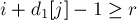). Поскольку за границами внешнего палиндрома никакой симметрии не гарантируется, то просто присвоить будет уже некорректно: у нас недостаточно сведений, чтобы утверждать, что в позиции
подпалиндром имеет такую же длину.На самом деле, чтобы правильно обрабатывать такие ситуации, надо "обрезать" длину подпалиндрома, т.е. присвоить 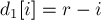. После этого следует пустить тривиальный алгоритм, который будет пытаться увеличить значение , пока это возможно.
Иллюстрация этого случая (на ней палиндром с центром в
изображён уже "обрезанным" до такой длины, что он впритык помещается во внешний палиндром):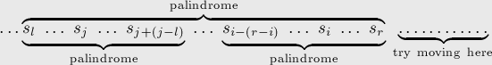
(На этой иллюстрации показано, что, хотя палиндром с центром в позиции
мог быть и более длинным, выходящим за пределы внешнего палиндрома, — но в позиции мы можем использовать только ту его часть, которая целиком помещается во внешний палиндром. Но ответ для позиции может быть больше, чем эта часть, поэтому дальше мы должны запустить тривиальный поиск, который будет пытаться раздвинуть его за пределы внешнего палиндрома, т.е. в область "try moving here".)
В завершение описания алгоритма сталось только напомнить, что надо не забывать обновлять значения после вычисления очередного значения .
Также повторимся, что выше мы описали рассуждения для вычисления массива нечётных палиндромов ; для массива чётных палиндромов все рассуждения аналогичны.
Оценка асимптотики алгоритма Манакера
На первый взгляд не очевидно, что данный алгоритм имеет линейную асимптотику: при вычислении ответа для определённой позиции в нём нередко запускается тривиальный алгоритм поиска палиндромов.
Однако более внимательный анализ показывает, что алгоритм всё же линеен. (Стоит сослаться на известный алгоритм построения Z-функции строки, который внутренне сильно напоминает данный алгоритм, и работает также за линейное время.)
В самом деле, легко проследить по алгоритму, что каждая итерация, производимая тривиальным поиском, приводит к увеличению на один границы . При этом уменьшений по ходу алгоритма происходить не может. Следовательно, тривиальный алгоритм в сумме совершит лишь  действий.
действий.
Учитывая, что, кроме тривиальных поисков, все остальные части алгоритма Манакера очевидно работают за линейное время, мы и получаем итоговую асимптотику: .
Реализация алгоритма Манакера
Для случая подпалиндромов нечётной длины, т.е. для вычисления массива , получаем такой код:
vector<int> d1 (n); int l=0, r=-1; for (int i=0; i<n; ++i) { int k = (i>r ? 0 : min (d1[l+r-i], r-i)) + 1; while (i+k < n && i-k >= 0 && s[i+k] == s[i-k]) ++k; d1[i] = k--; if (i+k > r) l = i-k, r = i+k; }
Для подпалиндромов чётной длины, т.е. для вычисления массива , лишь немного меняются арифметические выражения:
vector<int> d2 (n); l=0, r=-1; for (int i=0; i<n; ++i) { int k = (i>r ? 0 : min (d2[l+r-i+1], r-i+1)) + 1; while (i+k-1 < n && i-k >= 0 && s[i+k-1] == s[i-k]) ++k; d2[i] = --k; if (i+k-1 > r) l = i-k, r = i+k-1; }
Задачи в online judges
Список задач, которые можно сдать с использованием этого алгоритма: